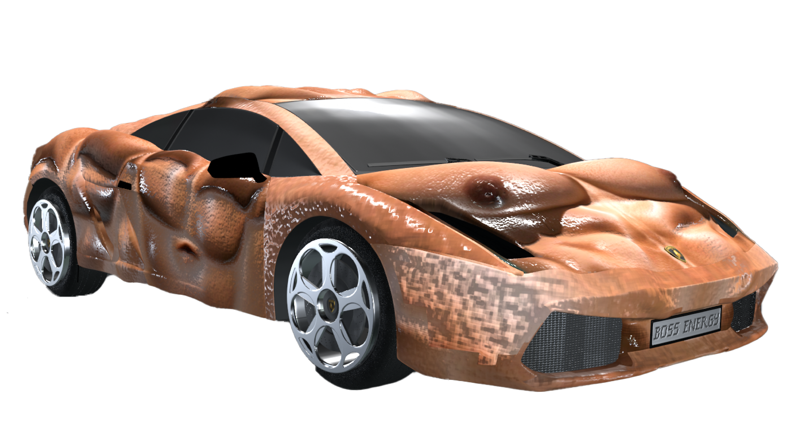

jasmin sonderegger
contact
scroll or press space bar

</a> </div> <div class="container" style="min-height: 200vh;"> <a href="./hellhound51_f.html" style="display: block; width: 100%; height: 100%;"> <iframe class="video" src="https://player.vimeo.com/video/983196318?badge=0" autopause=0&player_id=0&app_id=58479" frameborder="0" allow="autoplay; fullscreen; picture-in-picture; clipboard-write" style="width: 100%; height: 100%; border: none;" allow="autoplay; fullscreen" allowfullscreen>